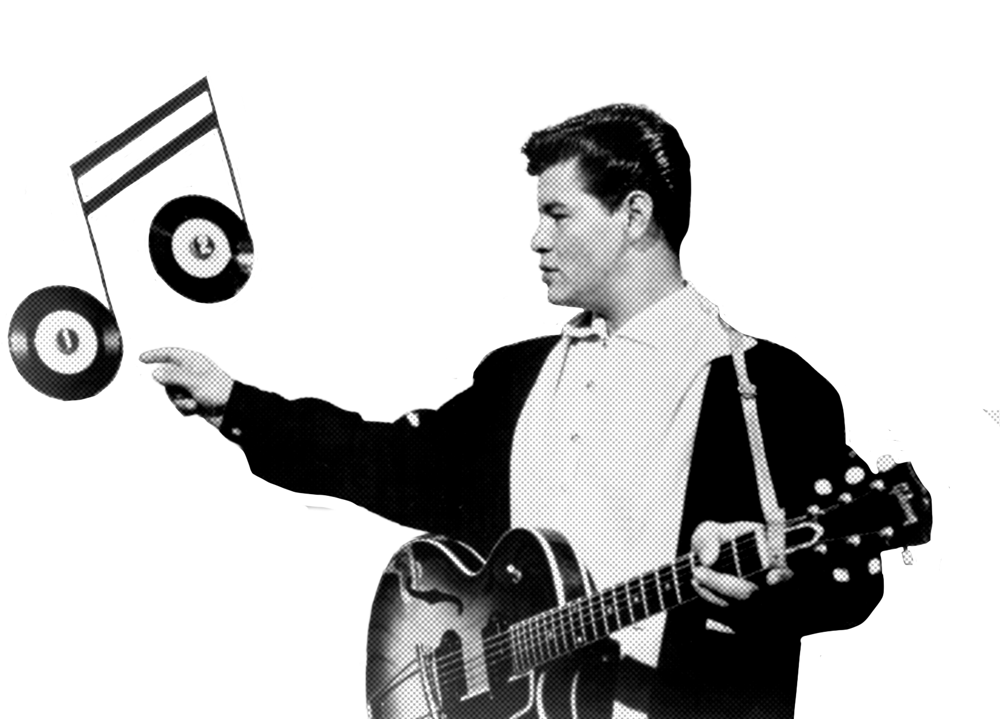

Valens was a pioneer of Chicano rock and Latin rock, inspiring many musicians of Mexican heritage. He influenced the likes of Los Lobos, Los Lonely Boys, and Carlos Santana, as Valens had become nationally successful at a time when very few Latinos were in American rock and pop music. He is considered the first Latino to successfully cross over into mainstream rock.
"La Bamba" proved to be his most influential recording, not only by becoming a pop chart hit sung entirely in Spanish, but also because of its successful blending of traditional Latin American music with rock. Valens was the first to capitalize on this formula, which was later adopted by such varied artists as Carlos Santana, Selena, Caifanes, Café Tacuba, Circo, El Gran Silencio, Aterciopelados, Gustavo Santaolalla, and many others in the Latin alternative scene. The Valenzuela family spoke only English at home, and he knew very little Spanish.[disputed – discuss] Valens learned the lyrics phonetically to record "La Bamba" in Spanish. In 2019, the Valens version of "La Bamba" was selected by the U.S. Library of Congress for preservation in the National Recording Registry as "culturally, historically, and aesthetically significant". Valens was nominated for a Grammy Award for Song of the Year in 1988 for La Bamba.

Honors and Recognition
In 2015, Billboard magazine listed Valens on its list of the 30 most influential Latino artists in history, citing "the influence of the Rock and Roll Hall of Famer lives on in today's Latin alternative artists" and also citing "the pioneering Latino artists's enduring crossover hit "La Bamba" proved early on that Mexican-rooted music and Spanish lyrics appealed to the mainstream".
"Come On, Let's Go" has been recorded by Los Lobos, the Ramones and the Paley Brothers (the Ramones on guitar, bass, and drums and the Paley Brothers on vocals), Tommy Steele, the Huntingtons, Girl in a Coma, and the McCoys. Johnny Rebb and his Rebels recorded the song for Leedon/Canetoad Records in Australia. "Donna" has been recorded by artists as diverse as MxPx, Marty Wilde, the Youngbloods, Clem Snide, Cappadonna, and Misfits.
Robert Quine has cited Valens's guitar playing as an early influence on his style. Valens also inspired Jimi Hendrix, Chan Romero, Carlos Santana, the Beatles, Chris Montez, Keith O'Conner Murphy, the Beach Boys and Led Zeppelin, among others.